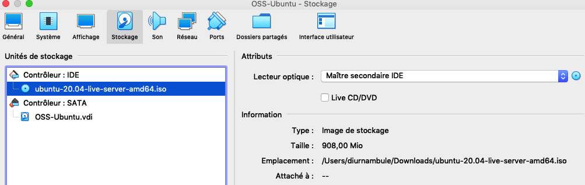

Compétences qui vont être acquises
- Créer une machine virtuelle
- Télécharger et installer un système d'exploitation
- Configurer le système en ligne de commande
- Installer une couche graphique et l'utiliser
- Obtenir des métriques système
- Installer les logiciels additionnels
Sais-tu qui est tux ?
Installation
Au lieu de configurer un multiboot ou acheter un nouvel ordinateur, une machine virtuelle sera créee avec le logiciel VirtualBox disponible pour Windows, MacOS et Linux à l'adresse suivante : Virtualbox.
Écran d'accueil de virtualbox
Voici à quoi devrait ressembler l'application une fois lancée :
Démarrage et création
Pour commencer, une nouvelle machine virtuelle doit être créee:
Ensuite, suivez les screenshots suivants pour la configuration:
- Nom et système d'exploitation
- RAM (mémoire vive)

- Disque dur


- Vérification
Il existe plusieurs systèmes d'exploitation opensource qu'on appelle communément distribution.
Ubuntu sera utilisé et il faut donc télécharger une image du système de base.
Téléchargement de l'image
L'adresse pour le téléchargement est la suivante : https://ubuntu.com/download/server
Association du fichier image avec la machine virtuelle
Pour démarrer sur l'image récupérée, il faut configurer la machine virtuelle dans Virtualbox:


Démarrage
Ensuite la machine peut être démarrée :
Écran d'accueil
Si tout va bien, voici l'écran présenté: